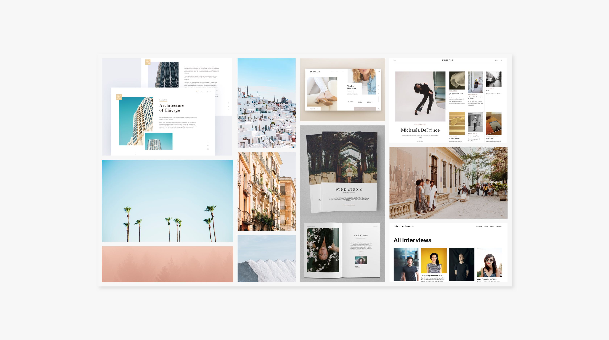
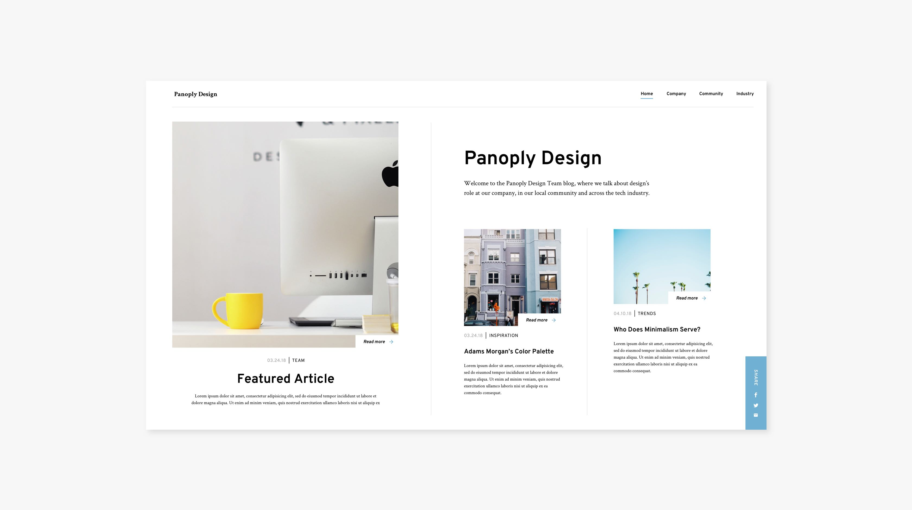
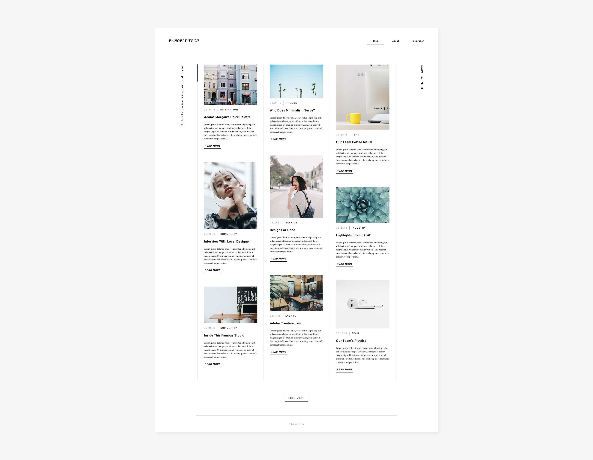
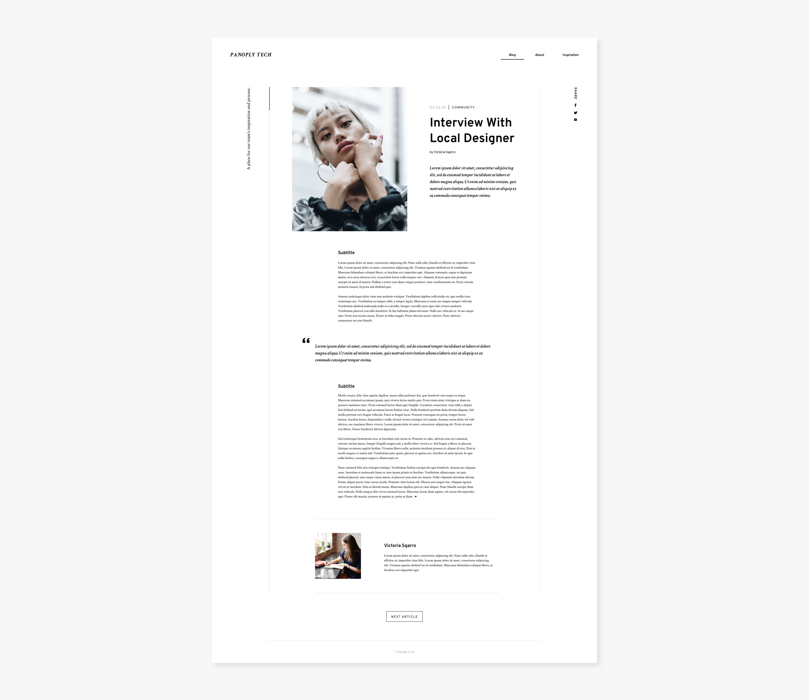
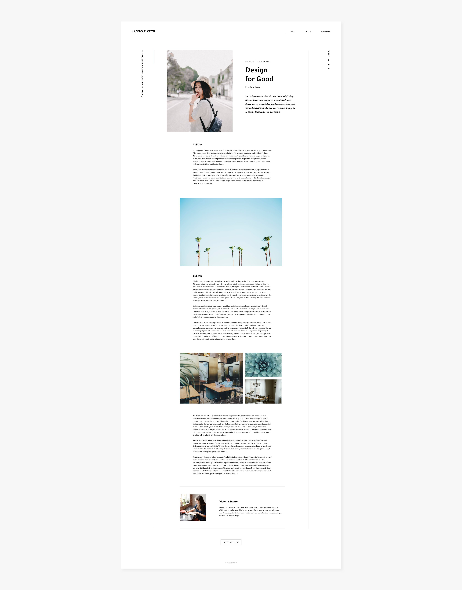
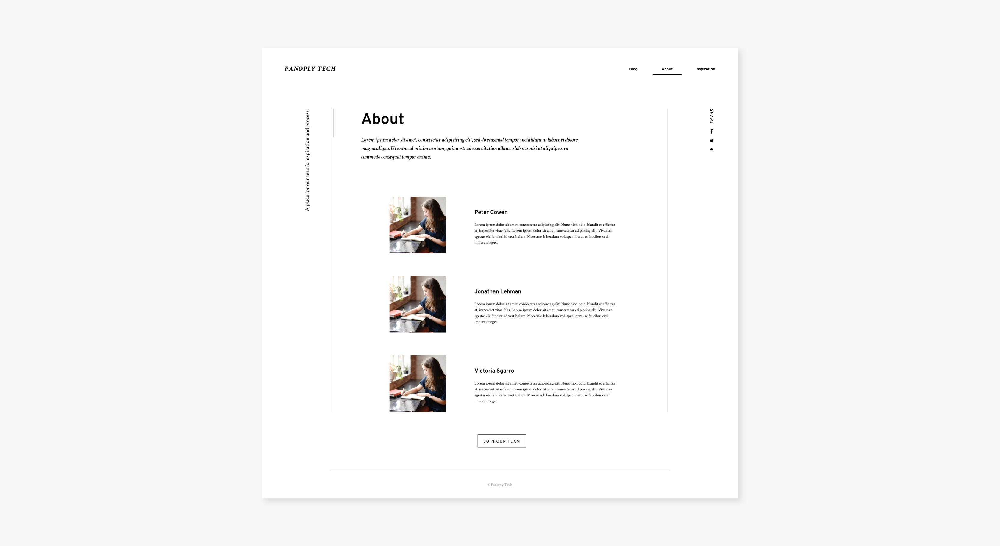
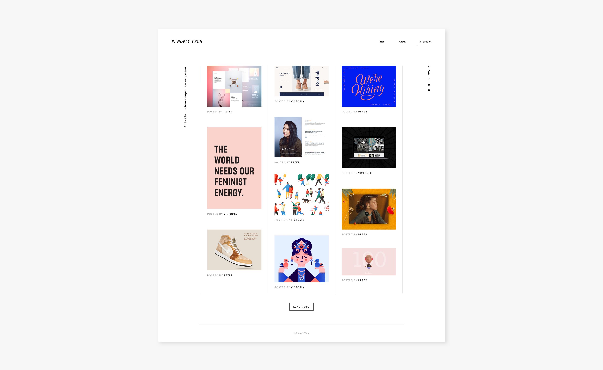

Wireframes
Because our goal for the blog was to differentiate our brand from other similar sites, we spent a lot of time in the ideation phase trying to push past surface level ideas to something more original. Using the 6-8-5 ideation exercise (6 to 8 ideas in 5 minutes), we sketched out different possibilities for the site's various pages.

6-8-5 exercise
Style Direction
We wanted the site's aesthetic to reflect our own taste, since the project started as an opportunity to challenge ourselves as designers. We decided that aesthetic meant: sophisticated, young, thoughtful, curated and minimal. We drew inspiration from other blog sites, travel photography and print magazines.

Mood board of inspiration

Final style direction
Mockups
Finally, we designed various standardized building blocks that would allow us to create different story layouts as needed. We wanted to make contributing to our blog as easy as possible for team members, regardless of coding ability.

Blog home page

Article template, showing a quote block option

Article template, showing photo block options

About page

Team inspiration page